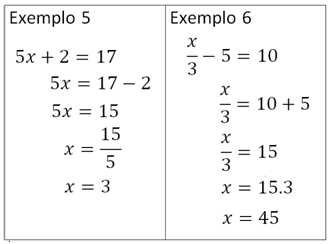
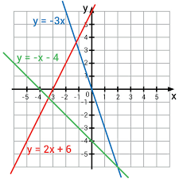
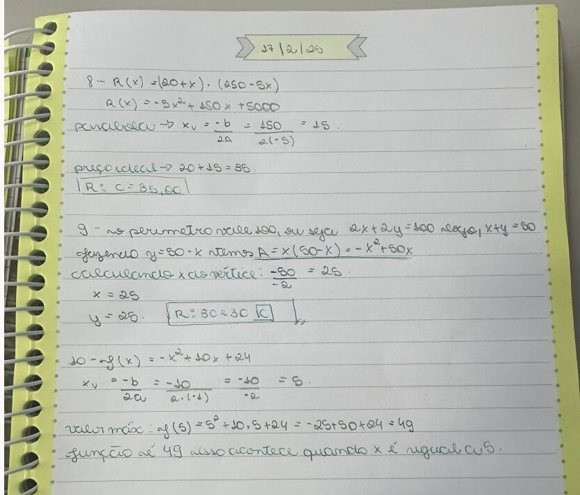

Matemática
A Matemática me acompanhou durante todo o ensino médio como uma ferramenta que, no começo, eu achava difícil, mas com o tempo comecei a enxergar com mais clareza. Cada ano me ensinou algo diferente: primeiro a base, depois a aplicação, e por fim a importância que ela tem no meu futuro.
Minha Jornada na Matemática
1º Ano - Construindo a Base
No primeiro ano, matemática parecia um mundo totalmente novo. Ainda me adaptando ao ensino médio, tinha momentos de insegurança, mas foi nesse ano que desenvolvi a base matemática essencial para tudo que viria depois.
2º Ano - Aprofundamento
O segundo ano foi mais intenso. A matemática ficou mais profunda, os conteúdos mais complexos e precisei ter mais disciplina. Foi nesse ano que entendi que matemática não é decorar: é praticar, errar, refazer e insistir.
3º Ano - Aplicação e Futuro
No terceiro ano, a correria aumentou, mas minha maturidade acompanhou. Entendi a matemática como ferramenta de vida: juros, porcentagens, cálculos, funções... tudo fez sentido para o meu futuro.
Conquistas em Matemática

Construindo a Base Matemática
No primeiro ano, aprendi o essencial: operações, equações, porcentagens, proporções e raciocínio lógico. Percebi que a matemática está presente em tudo e que sem essa base, nada avança.

Matemática Aplicada na Vida
No segundo ano, comecei a enxergar a matemática como algo vivo. Aprendi sobre funções, gráficos, estatísticas e probabilidades, e passei a interpretar números ao invés de só fazer contas.

Preparação para o Futuro
No terceiro ano, tudo se conectou. Estudei temas avançados como trigonometria, progressões e juros — conteúdos que fazem parte da vida adulta e da vida profissional. Foi o ano em que percebi que matemática não é só escola: é ferramenta de futuro.

Exemplo de um trabalho desenvolvido
Números não são faceis de entenderem, porém essenciais para entendermos o mundo, calculos básicos, parte principal é o desinvolmineto da abilidade dde pensar com os números.
Habilidades Desenvolvidas
O Valor da Matemática
A matemática me ensinou muito mais do que números e fórmulas. Ela me ensinou a pensar de forma organizada, a resolver problemas passo a passo, a analisar situações com critério e a não desistir diante dos desafios. Cada dificuldade superada na matemática me tornou mais resiliente e preparada para os desafios da vida.